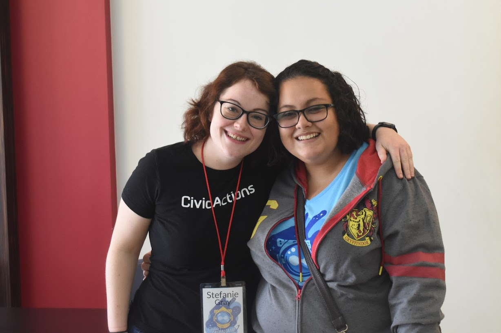

The DKAN open source open data platform helps agencies use data to improve lives
At Florida DrupalCamp 2019, CivicActions’ Open Data Specialist Stefanie Gray teamed up with DKAN developer and support engineer Dharizza Espinach Barahona to talk about how the DKAN open source open data platform is helping agencies use their data to accomplish big missions.

Used by countries worldwide — plus U.S. states and federal agencies, including HealthData.gov, the USDA’s National Agricultural Library, and the State of California — DKAN is a powerful tool for governments of all sizes to directly open up their data for use by researchers, entrepreneurs, regulatory bodies and citizens.
Learn how the DKAN suite of features is being used by governments to track school performance, report water quality levels, measure and reduce veteran suicide rates, preview complex geospatial data, empower scientists to perform and share groundbreaking research, and much more.
Highlights
- About DKAN, a community driven open data platform (1:00)
- DKAN and Drupal — a single codebase (6:01)
- How resources are organized in a DKAN library (8:20)
- Metadata — the who, what, when, where, and why of data (9:11)
- Data visualizations — helping make data relatable and useful (11:08)
- How the open data community informs the development of DKAN (21:31)
- What are the most popular features of DKAN? (29:10)
- Best practices for keeping data tidy and well managed (31:47)
Resources
Connect with Stefanie